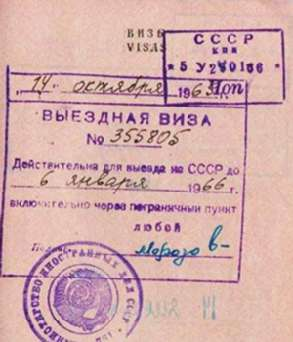

Борис Акунин
Мой календарь
И еще один хороший день российской истории. День космонавтики, Гагарин и полеты в безвоздушное пространство - это, конечно, замечательно. Но в космос летают единицы, а вот по Земле перемещаются все, и свобода оказаться в любой географической точке по собственному желанию - право, которым россияне обладали, увы, не всегда. Собственно, на протяжении долгих веков почти никогда.
Ездить за границу без дозволения «компетентных органов» запрещалось. А то мало ли чего люди в Европах насмотрятся - еще, пожалуй, возвращаться не захотят или, того хуже, вернутся и начнут баламутить воду. Петр Великий, как известно, лишь прорубил в Европу окно - посмотреть, а дверь нет, не открыл. Пушкина, например, за границу так и не пустили.
Впервые в российской истории свободный выезд из России был разрешен только 12 апреля 1881 года, и это поистине великая годовщина.
Тем более что экзотической привилегией россияне попользовались недолго, до прихода большевиков, а потом опять надолго ее лишились.
Я вырос в государстве, которое было заперто на замок, как тюремная камера. «Загранпоездка» считалась несказанным и труднодоступным счастьем. Верноподданные граждане бодро пели «Не нужен мне берег турецкий, и Африка мне не нужна», а неверноподданные уныло тянули: «Гудбай, Америка, где я не буду никогда».
Дело ведь не только в свободе путешествий, правда? В хорошей стране собственных граждан насильно удерживать не будут.
В общем, за открытые двери!